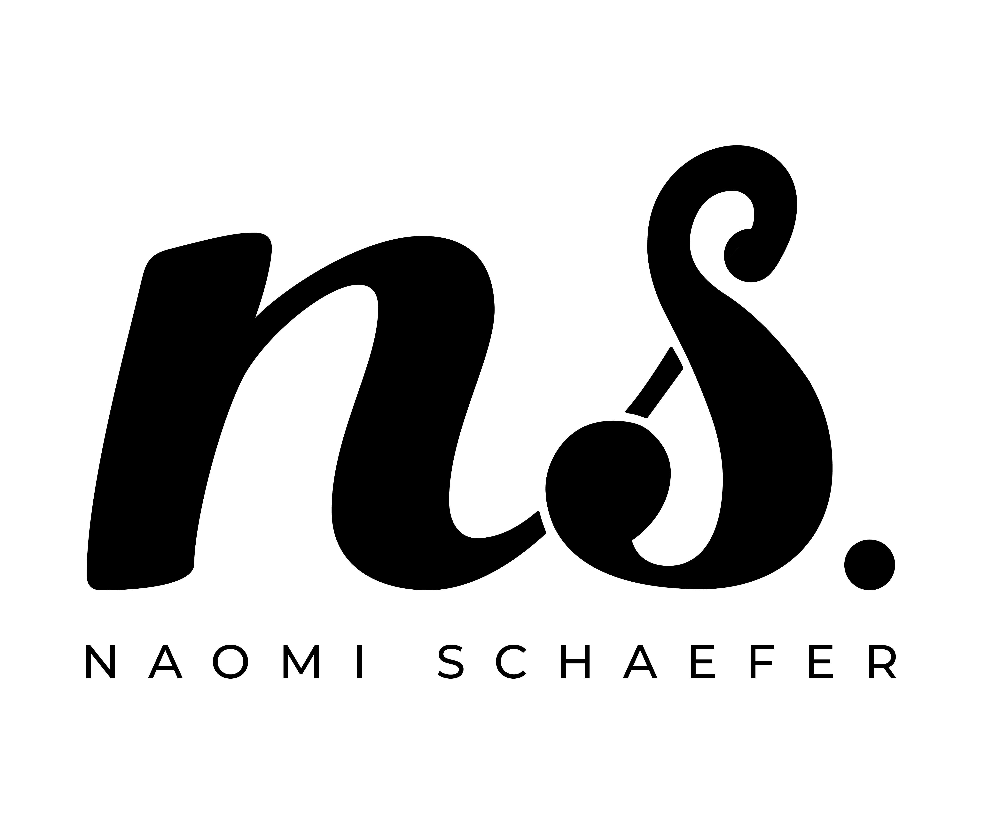

Collectibles
Trading Card Design
Professional trading card designs for officially licensed sports and entertainment properties.
Click card to flip

Card front — upload artwork
Card back — upload artwork
——
Stay tuned! More projects to come pending official release.
Available via Upper Deck, hobby shops, and select retailers.